测量框架：训练学生网络拟合含结构标签与随机标签的数据集，记录最终训练损失
L_train，计算 learned-bits 曲线 C(N) = (log V − L_train)·N / log 2，
对 C~N 做两段线性最小二乘拟合（联合搜索拐点使总残差最小），以第二段斜率
s2 / log2V 作为 structural fraction f_s 的估计量。
| 输入维度 D / 类别数 V | 10 / 10（log2V = 3.3219） |
| 验证集大小 N_val | 200 |
| 优化器 | full-batch Adam，lr = 1e-3，cosine 衰减至 0，周期 30,000 epochs |
| 早停（仅前 7 个实验） | 每 500 epochs 检查，相对改善 < 3e-4 连续 4 次则停止；30k 为硬上限 |
| 数据采样 | 非嵌套：每个 N 独立采样；每个 seed 一个 teacher |
| 图中展示 seed | 1000（C~N 曲线图与 loss 曲线图均为单 seed 原始点，不做平均） |
| 拟合报告量 | s1 = 第一段斜率（bits/样本）；N* = 拟合拐点；s2 = 第二段斜率；R² = 两段拟合优度；均为逐 seed 拟合后的中位数（3 seeds 时附 min–max） |
mirror/experiments/ 子文件夹一一对应）
| 协议 | 标签侧：输入 x ~ N(0, I₁₀) 无结构；结构在标签中——比例 f_s 的样本标签为 teacher(x) 的 argmax，其余为均匀随机标签 |
| Teacher | MLP w=10, d=2，无 bias，带 BatchNorm head（标签均衡用） |
| Student | MLP w=10, d=2，无 bias，无 norm |
| N 网格 | [80, 20000]，14 个对数点 |
| f_s / seeds | {0, 0.1, 0.3, 0.5, 0.7, 0.9} × {1000, 1007, 1014} = 252 runs |
| 训练 / 硬件 | 早停开；CPU 48 workers；总时长 1214 s |
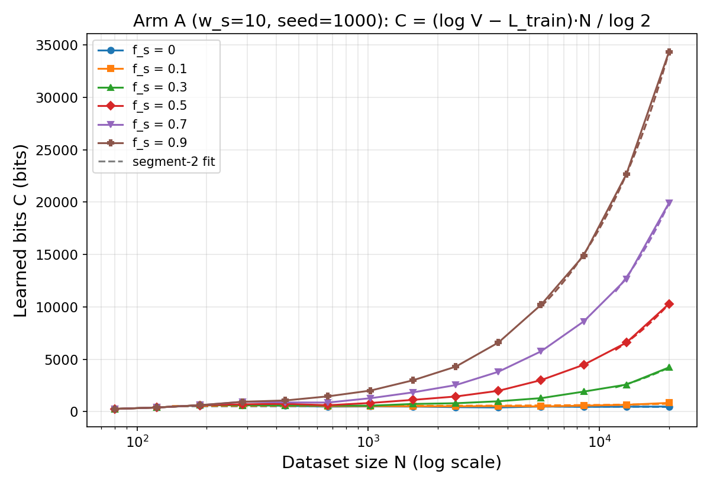
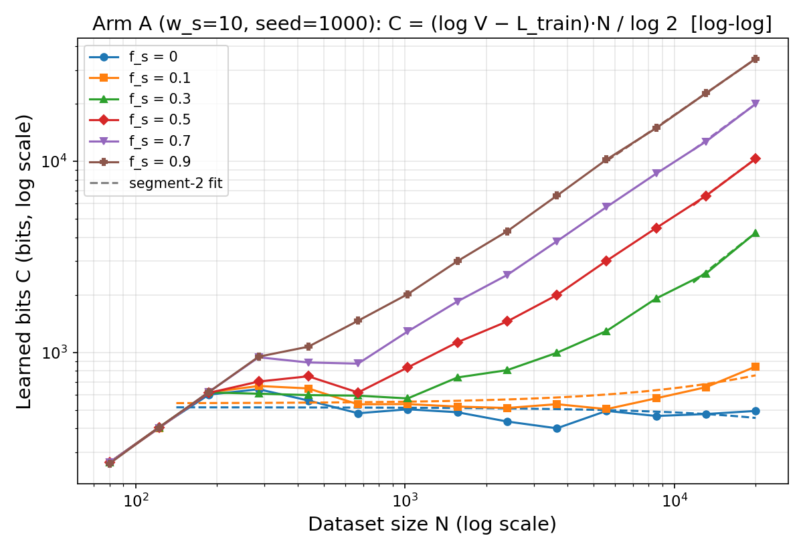
| f_s | s1 | N* | s2/log2V | R² | final train loss | final val loss |
|---|---|---|---|---|---|---|
| 0 | 4.384 (4.224–4.393) | 142 | −0.001 | 0.643 | 2.014 | 2.970 |
| 0.1 | 4.488 (3.926–4.762) | 142 | 0.003 | 0.737 | 2.010 | 2.669 |
| 0.3 | 0.159 (0.132–3.628) | 4273 (142–11721) | 0.059 (0.053–0.069) | 0.993 | 1.950 | 2.154 |
| 0.5 | 0.466 (0.437–0.468) | 10441 (3866–11721) | 0.159 (0.153–0.160) | 0.999 | 1.770 | 1.749 |
| 0.7 | 0.944 (0.904–4.053) | 3633 (142–11721) | 0.301 (0.284–0.307) | 0.999 | 1.461 | 1.502 |
| 0.9 | 1.748 (1.674–1.763) | 11721 (5611–11721) | 0.522 (0.507–0.558) | 0.9998 | 0.948 | 1.267 |
| 协议 | 同实验 1（标签侧，d_t=d_s=2，无 norm），N 网格改为密集小区间 |
| N 网格 | [50, 2000]，28 个对数点 |
| f_s / seeds | {0, 0.1, 0.3, 0.5, 0.7, 0.9} × 3 seeds = 504 runs |
| 训练 / 硬件 | 早停开；CPU 48 workers；总时长 2011 s |
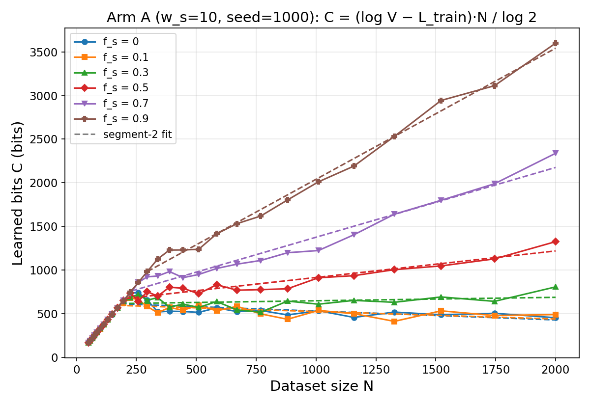
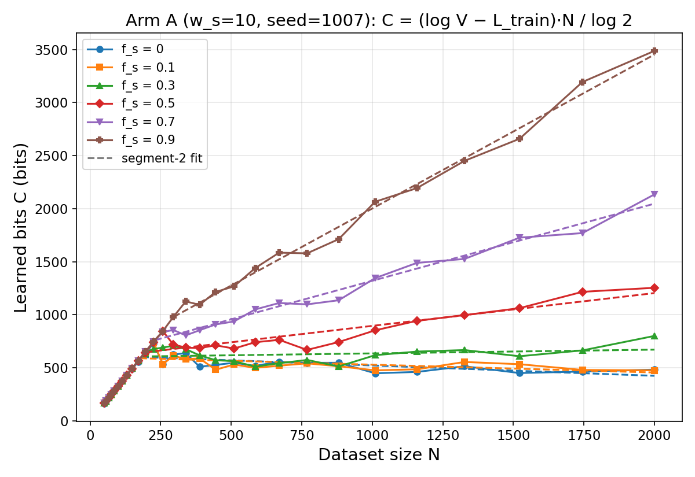
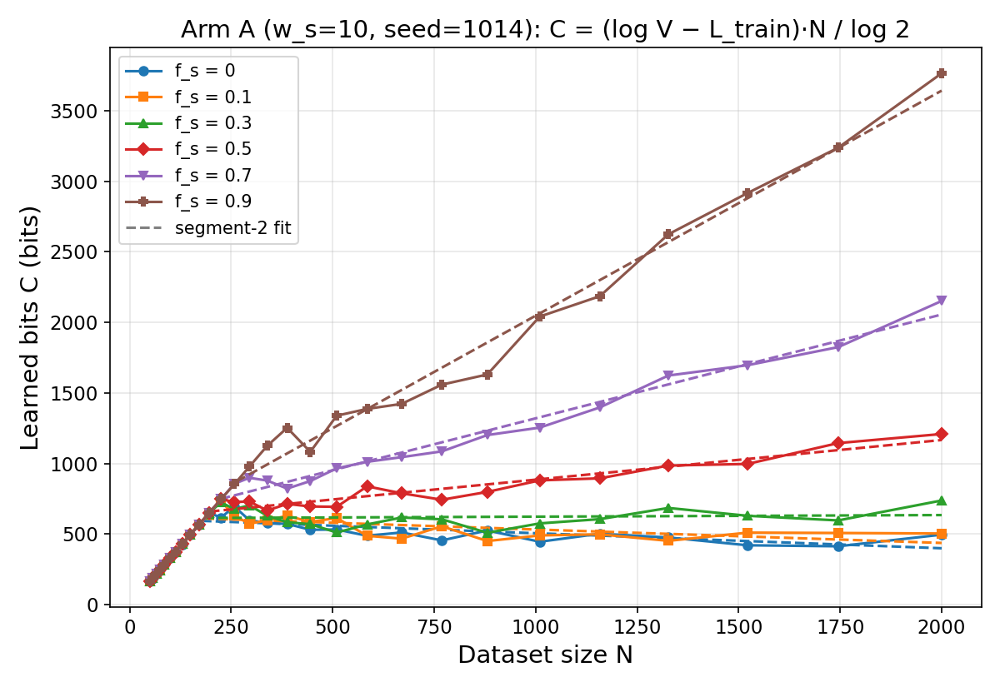
| f_s | s1 | N* | s2/log2V | R² | final train loss | final val loss |
|---|---|---|---|---|---|---|
| 0 | 3.315 (3.220–3.363) | 184 | −0.031 | 0.911 | 0.947 | 23.05 |
| 0.1 | 3.320 (3.303–3.354) | 178 | −0.026 | 0.901 | 1.017 | 15.00 |
| 0.3 | 3.345 (3.273–3.348) | 184 | 0.011 (0.003–0.012) | 0.907 | 0.837 | 24.74 |
| 0.5 | 3.267 (3.242–3.356) | 198 | 0.092 (0.085–0.093) | 0.980 | 0.741 | 14.96 |
| 0.7 | 3.285 (3.277–3.363) | 231 | 0.221 (0.219–0.241) | 0.993 | 0.345 | 19.88 |
| 0.9 | 3.309 (3.306–3.310) | 297 | 0.452 (0.437–0.480) | 0.997 | 0.026 | 18.66 |
| 协议 | 同实验 2（标签侧，密集网格），teacher 与 student 深度改为 d=10，student 仍无 norm |
| f_s / seeds | 6 档 × 3 seeds = 504 runs |
| 训练 / 硬件 | 早停开；H100 GPU 12 workers；总时长 5499 s |
| 备注 | 全部 run 的实际停止 epoch 在 4k–15k 之间（早停触发），没有任何 run 走完 30k cosine；s1 中位数 0.58–3.19，R² 低至 0.63 |
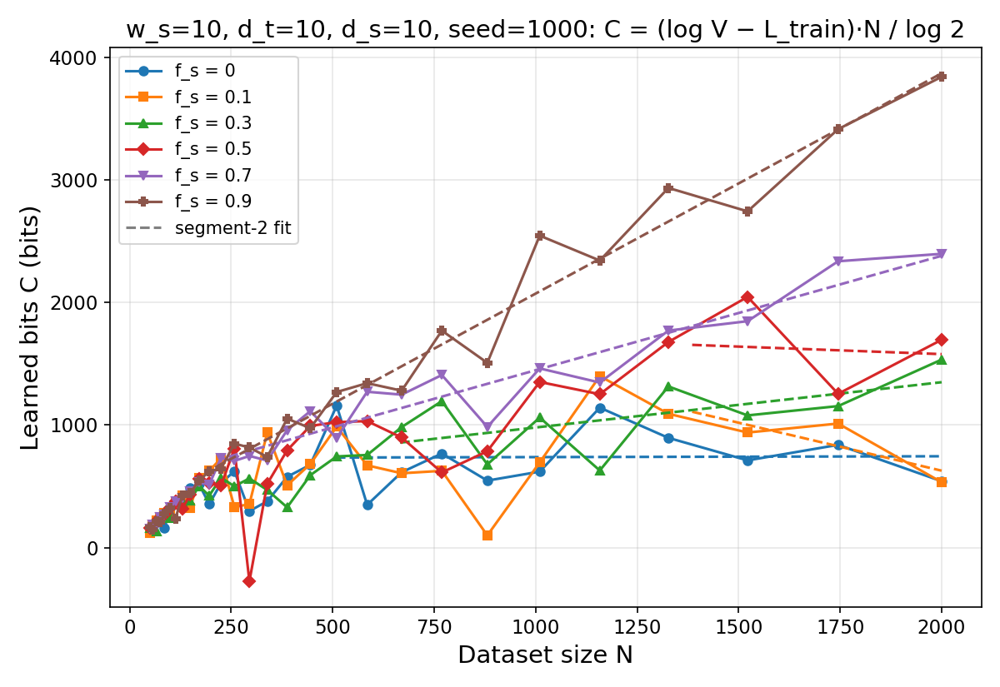
| f_s | s1 | N* | s2/log2V | R² | final train loss | final val loss |
|---|---|---|---|---|---|---|
| 0 | 1.722 (1.094–2.841) | 283 | 0.060 (0.002–0.066) | 0.631 | 1.194 | 93.60 |
| 0.1 | 0.582 (0.571–1.411) | 884 | 0.028 (−0.236–0.088) | 0.713 | 1.307 | 33.38 |
| 0.3 | 0.996 (0.833–1.795) | 666 | 0.120 (0.111–0.169) | 0.844 | 1.280 | 30.89 |
| 0.5 | 1.293 (1.042–1.447) | 884 | 0.129 (−0.037–0.138) | 0.948 | 1.074 | 40.09 |
| 0.7 | 2.991 (2.261–3.259) | 244 | 0.318 (0.281–0.343) | 0.978 | 0.679 | 46.27 |
| 0.9 | 3.186 (2.362–3.599) | 211 | 0.536 (0.524–0.541) | 0.986 | 0.530 | 66.71 |
| 目的 | 诊断实验 3 的 C~N 曲线异常：在相同 d_t=d_s=10、无 LN 设置下重训并记录完整 loss 历史 |
| 规模 | f_s 6 档 × N ∈ {196, 295, 585, 1010, 2000} × seed=1000 = 30 runs（GPU） |
| 训练 | 早停开（check=500 / patience=4 / tol=3e-4），30k cosine 上限 |
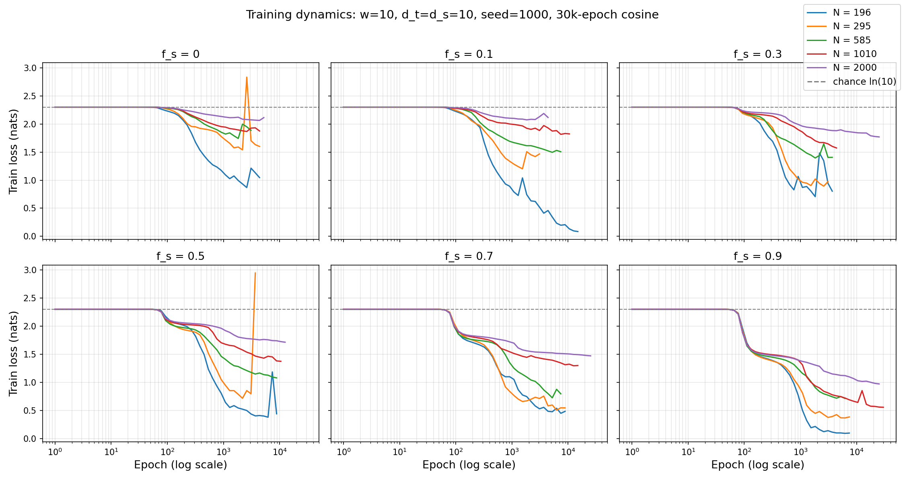
本实验只有图，无数值汇总表（results 未落盘到 mirror）。
| 协议 | 同实验 3（标签侧 d=10），student 每个隐藏层改为 Linear → LayerNorm → ReLU（带仿射参数） |
| f_s / seeds | 6 档 × 3 seeds = 504 runs |
| 训练 / 硬件 | 早停开；H100 GPU 12 workers；总时长 8649 s |
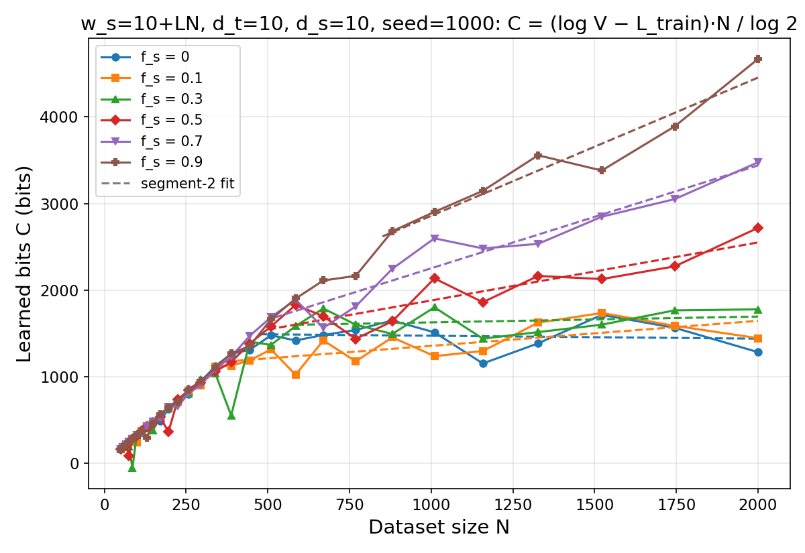
| f_s | s1 | N* | s2/log2V | R² | final train loss | final val loss |
|---|---|---|---|---|---|---|
| 0 | 3.107 (2.864–3.190) | 567 | −0.010 | 0.966 | 0.271 | 11.67 |
| 0.1 | 3.089 (2.849–3.183) | 514 | 0.067 (0.034–0.087) | 0.961 | 0.173 | 10.21 |
| 0.3 | 2.773 (2.683–3.051) | 587 | 0.089 (0.020–0.113) | 0.975 | 0.241 | 8.68 |
| 0.5 | 3.054 (2.770–3.110) | 567 | 0.202 (0.189–0.257) | 0.977 | 0.150 | 8.44 |
| 0.7 | 2.864 (2.639–3.246) | 640 | 0.357 (0.261–0.404) | 0.985 | 0.109 | 7.54 |
| 0.9 | 3.030 (2.646–3.045) | 851 | 0.480 (0.272–0.480) | 0.994 | 0.087 | 6.70 |
| 协议 | GMM 输入侧（无 teacher）：结构样本取自 V=10 类条件高斯混合——均值向量两两正交、成对距离 sep=4、簇内 σ=1，标签 = 簇编号；随机样本 x ~ N(0, I₁₀) + 均匀标签。验证集为 GMM 新样本 + 真实簇标签 |
| Student | MLP w=10, d=2，无 bias，无 norm |
| N 网格 / f_s / seeds | [50, 2000] × 28 点；6 档 × 3 seeds = 504 runs |
| 训练 / 硬件 | 早停开；H100 GPU 12 workers；总时长 4264 s |
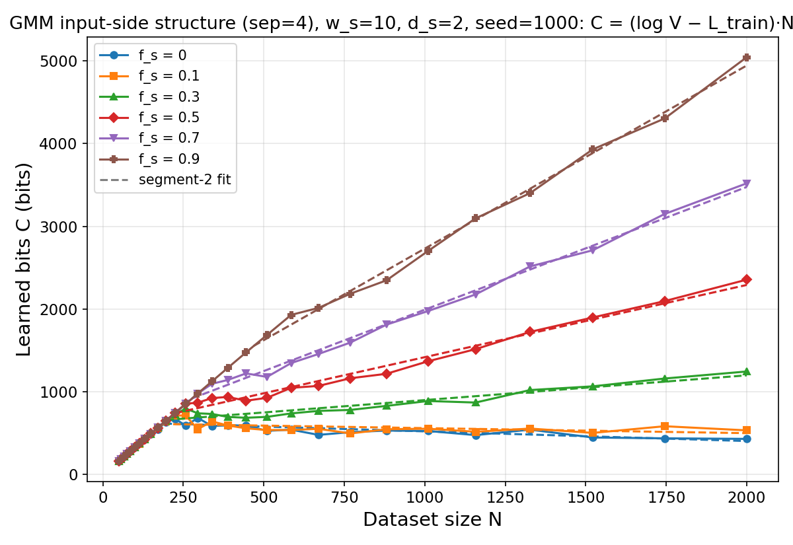
| f_s | s1 | N* | s2/log2V | R² | final train loss | final val loss |
|---|---|---|---|---|---|---|
| 0 | 3.212 (3.160–3.295) | 191 | −0.035 | 0.903 | 1.007 | 34.99 |
| 0.1 | 3.311 (3.310–3.357) | 184 | −0.013 | 0.919 | 1.012 | 22.43 |
| 0.3 | 3.375 (3.359–3.380) | 191 | 0.093 (0.090–0.101) | 0.980 | 0.706 | 22.85 |
| 0.5 | 3.330 (3.308–3.350) | 217 | 0.263 (0.260–0.268) | 0.992 | 0.322 | 16.47 |
| 0.7 | 3.329 (3.324–3.334) | 277 | 0.446 (0.437–0.452) | 0.997 | 0.029 | 12.82 |
| 0.9 | 3.318 (3.317–3.325) | 475 | 0.666 (0.657–0.674) | 0.999 | 9.6e-8 | 8.30 |
| 协议 | 双簇输入 teacher-student：输入 x = μ_c + z，z ~ N(0, I₁₀)，两个簇中心 μ_A = +2u、μ_B = −2u（u 为随机单位向量，簇间距 sep=4）。A 簇（比例 f_s）标签 = teacher(x) argmax；B 簇直接分配均匀随机标签。验证集为 A 簇新样本 + teacher 标签 |
| Teacher | MLP w=10, d=10，每层 Linear → LayerNorm → ReLU，保留 BatchNorm head |
| Student | MLP w=10, d=10，Linear → LayerNorm → ReLU |
| N 网格 / f_s / seeds | [50, 2000] × 28 点；6 档 × 3 seeds = 504 runs |
| 训练 / 硬件 | 早停开（实际停止 epoch 6.5k–30k 不等）；H100 GPU 12 workers；总时长 3114 s |
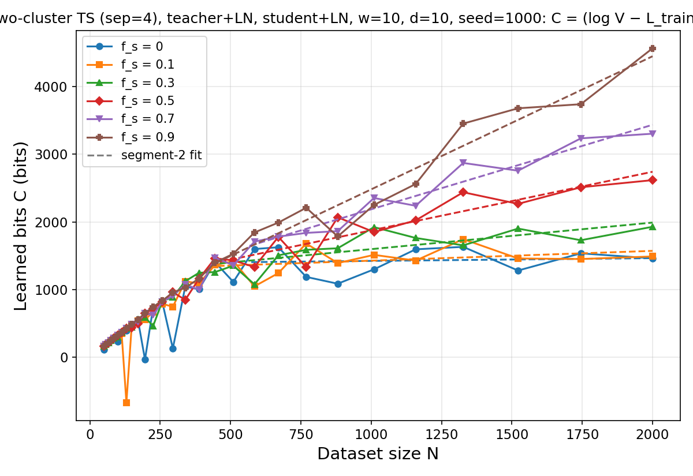
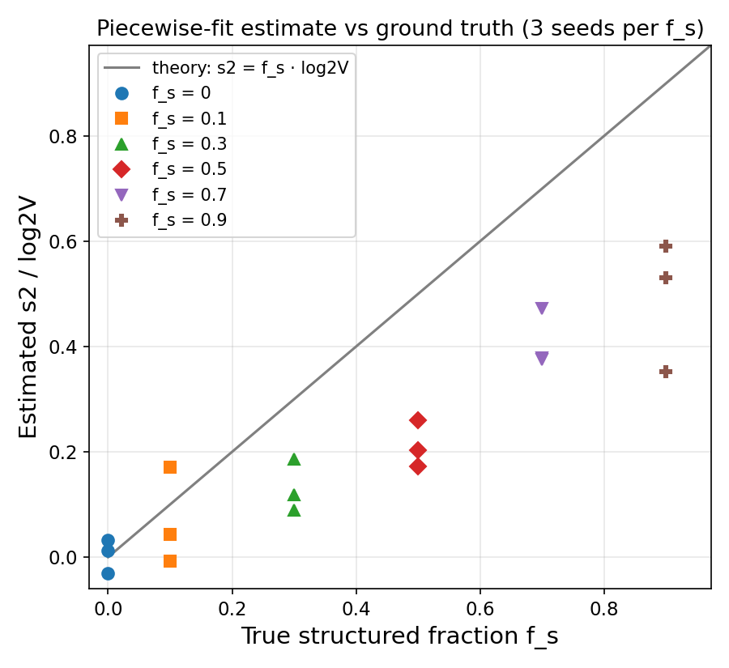
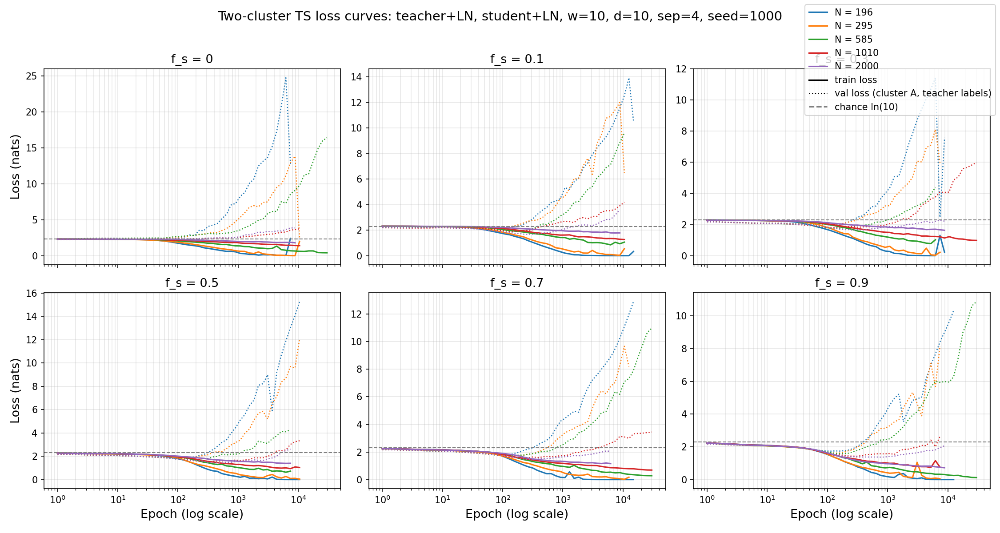
| f_s | s1 | N* | s2/log2V | s2/(f_s·log2V) | R² | final train loss | final val loss |
|---|---|---|---|---|---|---|---|
| 0 | 2.560 (2.403–3.078) | 574 | 0.012 | — | 0.965 | 0.175 | 11.91 |
| 0.1 | 3.073 (2.955–3.146) | 455 | 0.043 | 0.435 | 0.957 | 0.239 | 9.83 |
| 0.3 | 2.963 (2.767–3.082) | 488 | 0.118 | 0.393 | 0.968 | 0.214 | 7.24 |
| 0.5 | 3.008 (2.773–3.014) | 554 | 0.202 | 0.405 | 0.975 | 0.239 | 6.79 |
| 0.7 | 3.034 (2.813–3.147) | 567 | 0.379 | 0.541 | 0.989 | 0.154 | 7.02 |
| 0.9 | 3.050 (3.040–3.100) | 719 | 0.531 | 0.589 | 0.985 | 0.100 | 7.37 |
| 协议 | 同实验 7（双簇 TS，双侧 LN，sep=4），两处改动：① 关闭早停，所有 run 跑满 30,000 epochs cosine；② 单 seed=1000，N 网格减至 21 点（N≤250 保留 5 点：50/75/112/167/225） |
| 规模 / 硬件 | 6 档 × 21 点 × 1 seed = 126 runs；CPU（8 核配额）12 workers；总时长 3375 s。训练循环由 DataLoader 改为直接全批量步进（等梯度，CPU 上约 2.7× 加速） |
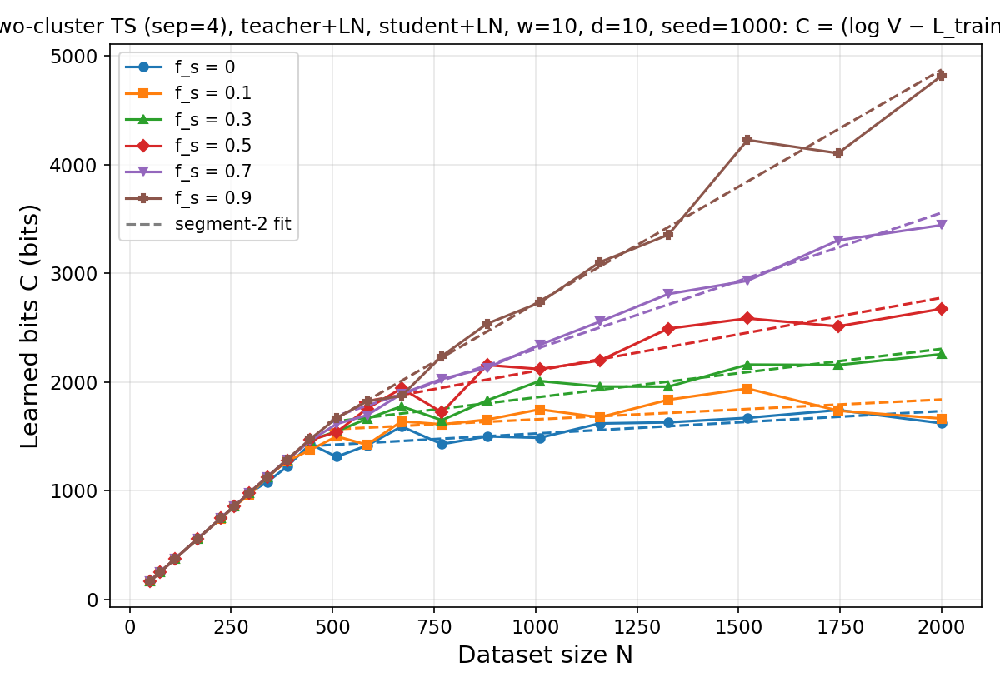
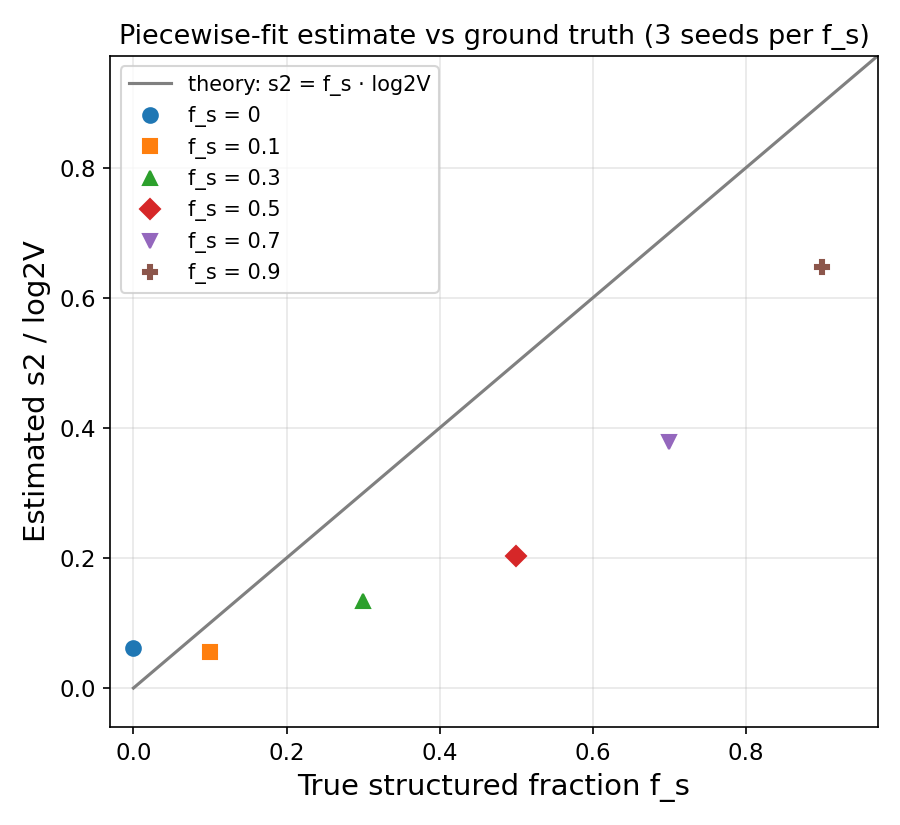
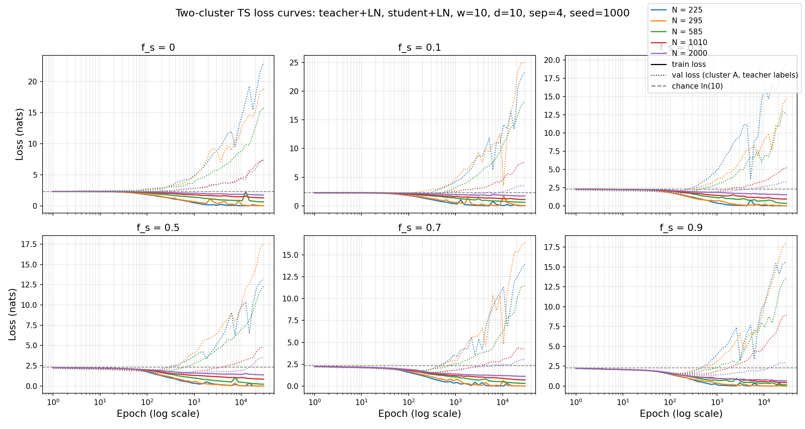
| f_s | s1 | N* | s2/log2V | s2/(f_s·log2V) | R² | final train loss | final val loss |
|---|---|---|---|---|---|---|---|
| 0 | 3.173 | 438 | 0.062 | — | 0.988 | 0.521 | 15.73 |
| 0.1 | 3.152 | 488 | 0.055 | 0.550 | 0.979 | 0.266 | 16.12 |
| 0.3 | 3.287 | 495 | 0.135 | 0.449 | 0.994 | 0.203 | 9.47 |
| 0.5 | 3.146 | 565 | 0.203 | 0.405 | 0.988 | 0.212 | 11.59 |
| 0.7 | 3.226 | 523 | 0.378 | 0.540 | 0.998 | 0.110 | 11.12 |
| 0.9 | 3.318 | 488 | 0.648 | 0.720 | 0.994 | 0.035 | 11.10 |
| 协议 | Oracle-gate teacher-student：输入 x = (g, z)，z ~ N(0, I₉)，第一维为显式门控坐标——结构样本 g=+1（比例 f_s），随机样本 g=−1（均匀随机标签）。结构标签由固定的线性单纯形 teacher 产生：10 个单位向量 w_v ∈ R⁹ 两两内积 −1/9（正则单纯形，所有 seed 共用），y = argmax_v w_v·z。验证集为 g=+1 新样本 + teacher 标签 |
| Student | MLP w=16, d=2，Linear → LayerNorm → ReLU；无 weight decay |
| N 网格 / f_s / seeds | 21 点（同实验 8）；f_s ∈ {0, 0.1, 0.3, 0.5, 0.7, 0.9, 1.0}（含端点 1.0）；seed=1000 = 147 runs |
| 训练 / 硬件 | 无早停，跑满 30k cosine；H100 GPU 12 workers；总时长 1886 s |
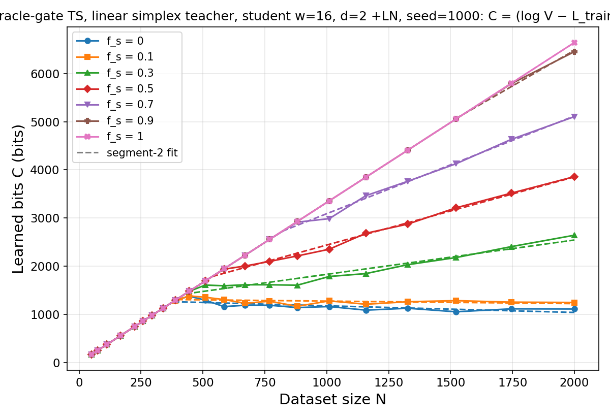
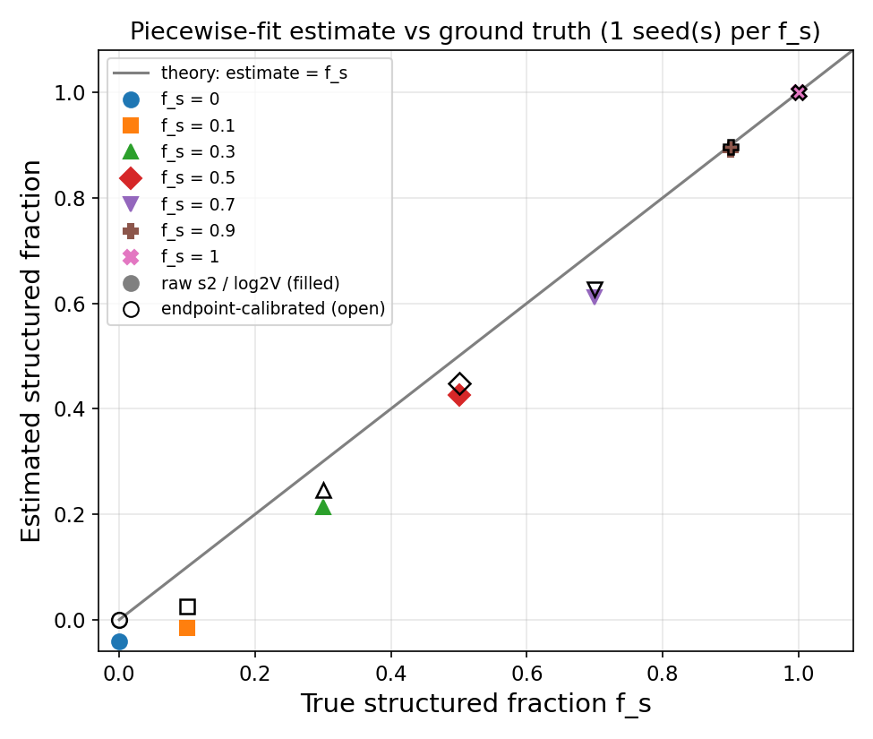
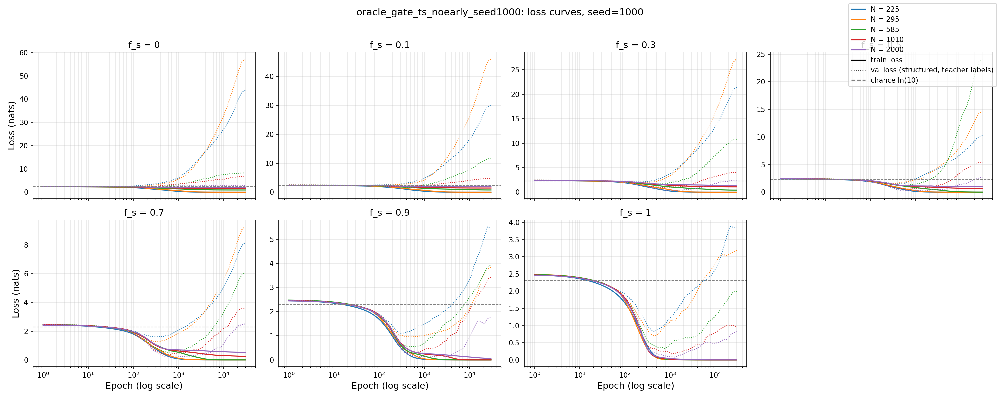
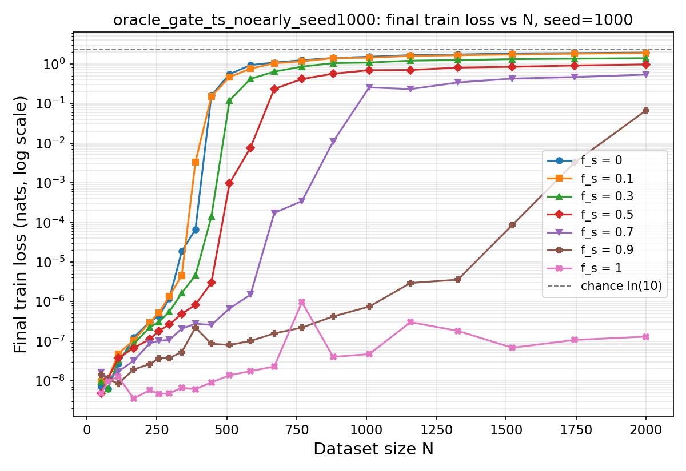
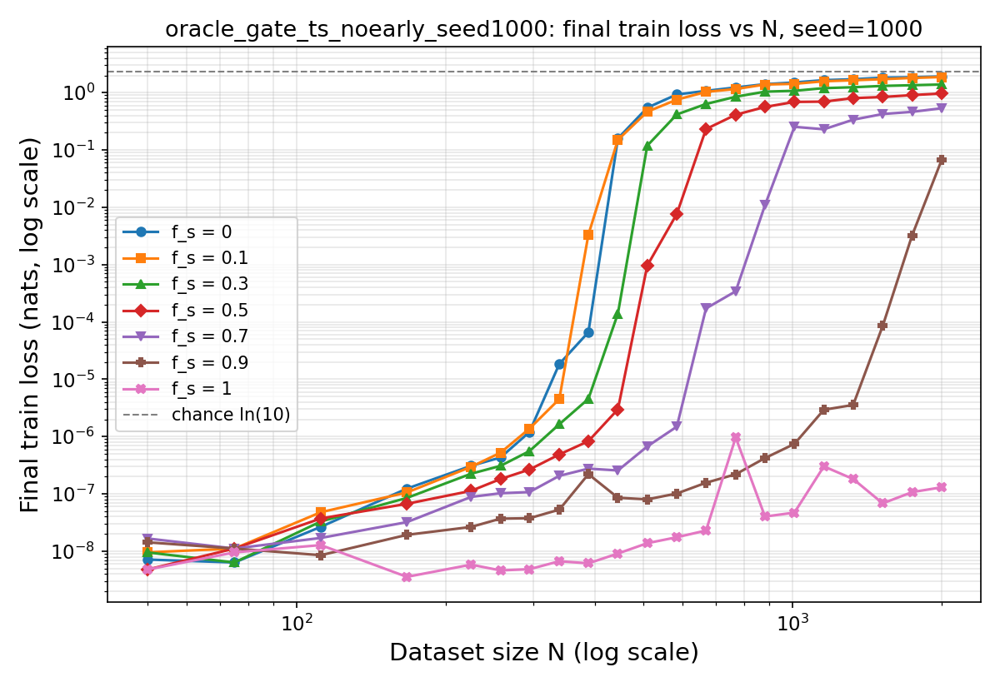
| f_s | s1 | N* | s2/log2V | s2/(f_s·log2V) | 端点校准 | R² | val acc @N=2000 | final train loss | final val loss |
|---|---|---|---|---|---|---|---|---|---|
| 0 | 3.301 | 381 | −0.042 | — | 0.000 | 0.982 | 0.120 | 0.547 | 13.07 |
| 0.1 | 3.289 | 395 | −0.016 | ~0 | 0.025 | 0.989 | 0.355 | 0.465 | 14.63 |
| 0.3 | 3.298 | 431 | 0.214 | 0.715 | 0.246 | 0.993 | 0.795 | 0.119 | 12.41 |
| 0.5 | 3.320 | 537 | 0.426 | 0.851 | 0.449 | 0.999 | 0.855 | 9.6e-4 | 10.32 |
| 0.7 | 3.321 | 821 | 0.611 | 0.873 | 0.626 | 0.999 | 0.870 | 6.7e-7 | 7.43 |
| 0.9 | 3.331 | 1522 | 0.892 | 0.991 | 0.896 | 0.9999 | 0.935 | 1.0e-7 | 3.74 |
| 1.0 | 3.322 | 771 | 1.0000 | 1.000 | 1.000 | 1.0000 | 0.930 | 1.4e-8 | 1.79 |
| f_s | N | min val loss | final val loss | final / min | 最低点 epoch | final val acc |
|---|---|---|---|---|---|---|
| 0.0 | 225 | 2.470 | 43.852 | 17.8 | 16 | 0.085 |
| 0.0 | 2000 | 2.318 | 2.933 | 1.3 | 78 | 0.120 |
| 0.1 | 225 | 2.426 | 30.157 | 12.4 | 39 | 0.195 |
| 0.1 | 2000 | 1.748 | 2.222 | 1.3 | 452 | 0.355 |
| 0.3 | 225 | 2.082 | 21.444 | 10.3 | 189 | 0.315 |
| 0.3 | 2000 | 0.386 | 2.465 | 6.4 | 1084 | 0.795 |
| 0.5 | 225 | 1.505 | 10.318 | 6.9 | 380 | 0.470 |
| 0.5 | 2000 | 0.262 | 2.654 | 10.1 | 642 | 0.855 |
| 0.7 | 225 | 1.625 | 8.186 | 5.0 | 380 | 0.510 |
| 0.7 | 2000 | 0.185 | 2.509 | 13.5 | 764 | 0.870 |
| 0.9 | 225 | 1.095 | 5.466 | 5.0 | 319 | 0.645 |
| 0.9 | 2000 | 0.121 | 1.755 | 14.5 | 1291 | 0.935 |
| 1.0 | 225 | 0.825 | 3.863 | 4.7 | 452 | 0.725 |
| 1.0 | 2000 | 0.082 | 0.817 | 10.0 | 1291 | 0.930 |
| 协议 | 双簇输入 teacher-student（sep=4，协议同实验 7），teacher 与 student 均带 LayerNorm，宽度扫描 w_t = w_s ∈ {4, 8}，d=2。f_s ∈ {0, 0.3, 0.7, 1.0}，3 seeds；w=4 时 N 至 380，w=8 时 N 至 1050 |
| 备注 | 该目录在 mirror 中只有图（无 results/summary.json），以上配置信息读自图题与坐标轴 |
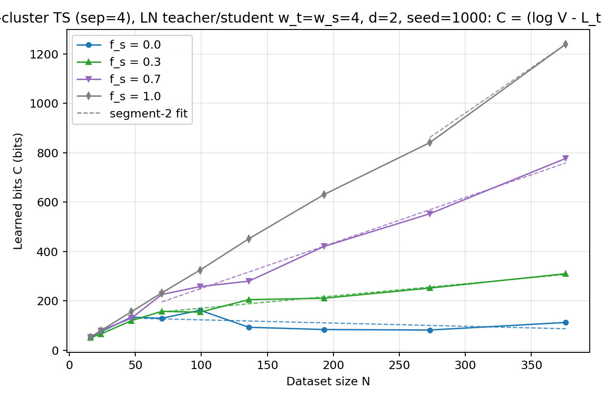
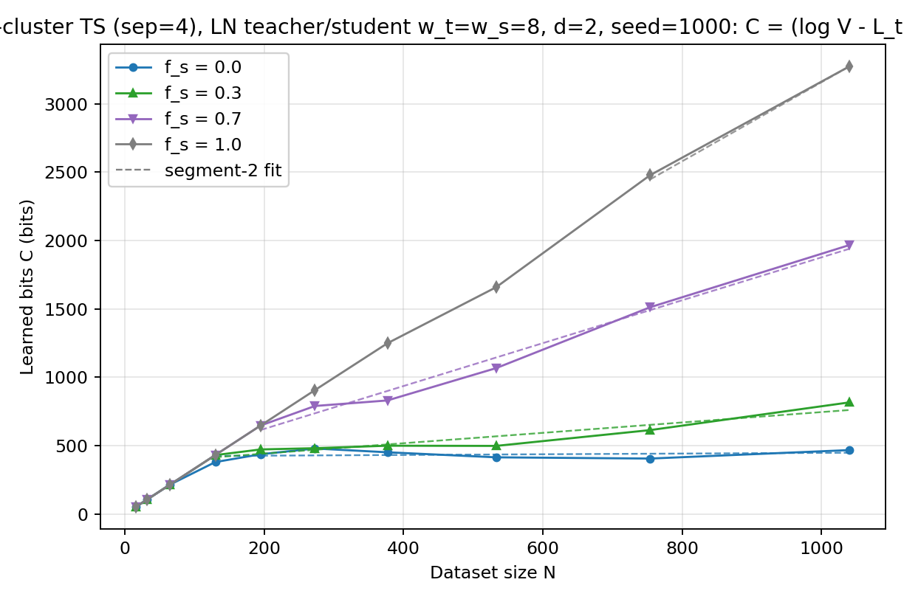
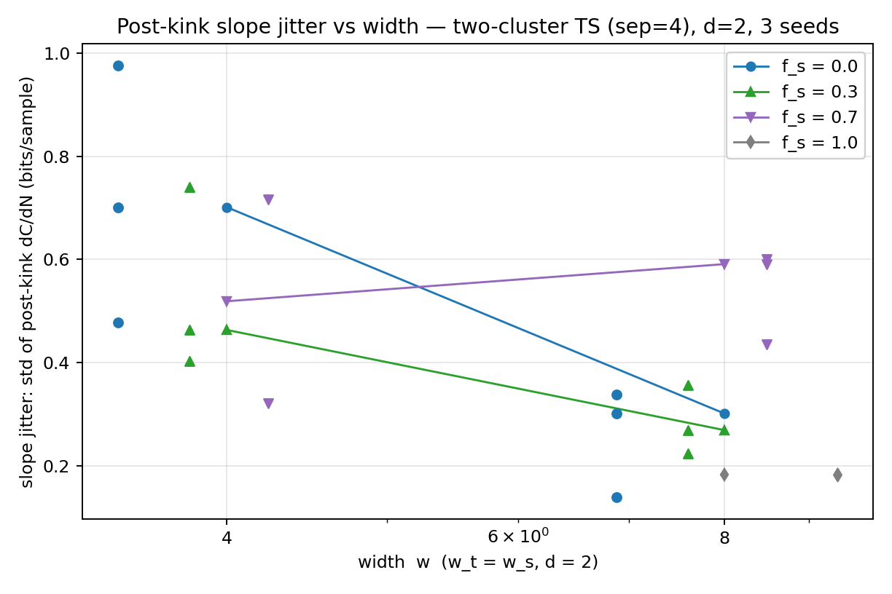
生成时间：2026-08-22。数据来源：各子文件夹 results/summary.json 与 checkpoint 内的 loss 历史； 图表原始文件位于远端 cephfs 同名 experiments 目录。